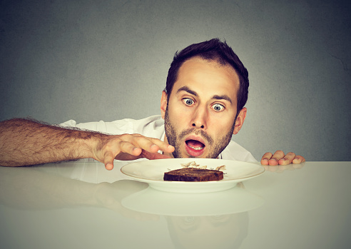

Do I Have Bulimia Nervosa?
Bulimia is known for the classic symptoms of bingeing and purging, but this eating disorder has several other distinctive symptoms.
Bulimia nervosa, aka bulimia, is an eating disorder where you feel out of control when you eat – like you can’t stop. Then, after overeating, you may feel an intense sense of guilt and an overwhelming urge to make up for the binge.
These episodes of bingeing and purging are a continuous cycle that repeat over and over. It’s not uncommon to feel guilt or shame after each episode.
Symptoms of bulimia
People with different body types have eating disorders. While some people with bulimia may be thin, others can be a moderate weight or even overweight.
There are two types of bulimia according to the Diagnostic and Statistical Manual of Mental Disorders, 5th edition (DSM-5). They’re separated by the type of purging behavior.
- Purging bulimia. After binge eating, a person with this type of bulimia will vomit or misuse diuretics, laxatives, or enemas. This is the most common type of bulimia.
- Non-purging bulimia. Instead of purging after binge eating, a person with this type will fast or obsessively exercise.
Complications from bulimia
Cardiovascular complications
- irregular heartbeat (arrhythmia)
- low pulse
- low blood pressure
- heart failure
Gastrointestinal complications
- nausea and vomiting
- low blood sugar
- stomach pain and bloating
- constipation
- inflamed or damaged esophagus
- pancreatitis
- stomach rupture
Endocrine complications
- drop in body temperature or hypothermia
- anemia
- menstrual irregularities (missing or irregular periods)
- high cholesterol
- kidney failure
Neurological complications
- seizures
- difficulty falling or staying asleep
- sleep apnea
- muscle cramps
- stroke
- problems concentrating